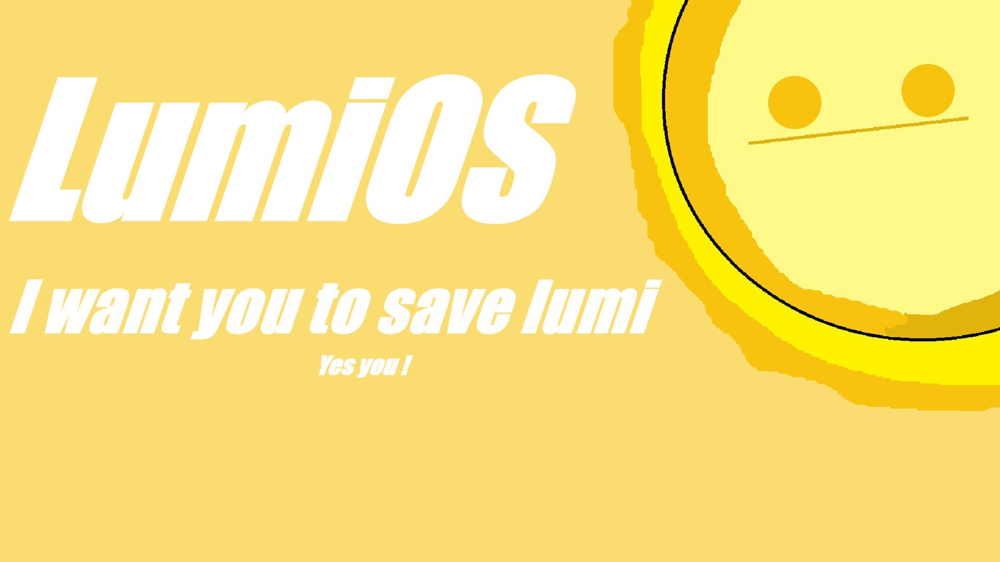

Yes it is
Since the project's inception, its goals have differed radically from those of Debian. Although Lumi is based on Debian, it has different policies and objectives. Even from its very first version, the system has differed from Debian in several aspects, such as graphical system updates upon detection, and the default availability of the latest Debian packages from the testing repository. Additionally, it features a mechanism to download missing drivers by scanning the system every time the device boots; if a missing driver is detected, a graphical screen appears asking the user whether they want to download it. There are also other features related to Flatpak. However, despite this, a few complexities of the original Debian system still persist. You can check these sections on our website:

As you can see, this logo is considered somewhat informal, simple, or even bad if you care about logos that much. However, there are good reasons why this square logo serves as every single image, logo, and wallpaper throughout the entire system—up until the version right before 1.0.0. This logo wasn't random or just the result of lazy design—though, to be honest, laziness was one of the biggest reasons it turned out this way. I was too lazy to design dozens of images after the system's success! But still, there are real reasons for choosing and drawing it like this. The sun in the top-right corner actually hints at the system's name. "Lumi" was originally short for the French word "lumière", which means light or glow. (The name doesn't have a deep meaning; I was studying French at the time, and due to my somewhat poor English skills, I spent months thinking it was pronounced Li-mi. That was enough for me to make it the system's name simply because I liked it. I only realized later that it wasn't pronounced the way I wanted—but what's done is done, no turning back now!) And as you know, the sun is basically a giant lamp (I know it's a terrible metaphor, but I don't want to change it). This lamp radiates light, and "Lumi" literally means light, so... I think you get the point. Anyway, drawing the sun in the top-right corner in a childish, beginner-like doodle style—complete with a smiley face—is a homage to a bygone era when kids used to draw the sun in the corner with a smile, unlike today where most kids draw it right in the middle. Also, let's not forget my laziness factor—though I really don't know why I'm trying so hard to push the idea that I'm that lazy. Next to the sun, you can see the phrase "I want you to save Lumi". This is a sarcastic jab at anyone trying to use a system that is basically half Debian bugs, just because they think they're doing a favor by using a system that still loses to many everyday distros in certain features. So, this square image—which literally pops up in almost every graphical part of the system—serves a single purpose: to remind you that choosing this system at this stage is absolutely unwise, and that you're doing a favor by using it solely for Lumi's sake. The sentence was inspired by this:
I thought the phrase was different when I drew the logo.
These are not links specifically for visiting; they are related to the update program:
GitHub Project:
social media:
Note: For clarification, the humorous and sarcastic comments on this page are merely lighthearted jokes within the community context. While the Lumi system is still in version 0.1 (and is therefore not recommended as a primary operating system for non-technical users currently, or even technical users when compared to other distributions depending on the intended use), it is a semi-fully functional and well-designed project. As for the phrase in the user statement page ("Do it yourself, it's not that hard"), it is not an evasion of documentation. Rather, it was intentionally placed to encourage early adopters who heard about the project to dive into the experience, explore the system themselves, and take the humor as a form of challenge or mystery instead of relying solely on initial assumptions or guesswork. And this phase is not temporary; humor in the current documentation will always be present according to what I plan at the time of writing this, but it will be carefully chosen to avoid misunderstandings, along with clarification and a touch of seriousness depending on the subject. When the project reaches a stage where a user_statement is needed, the page will be filled with the required content.